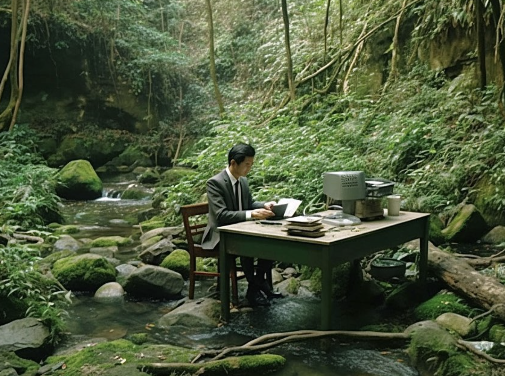
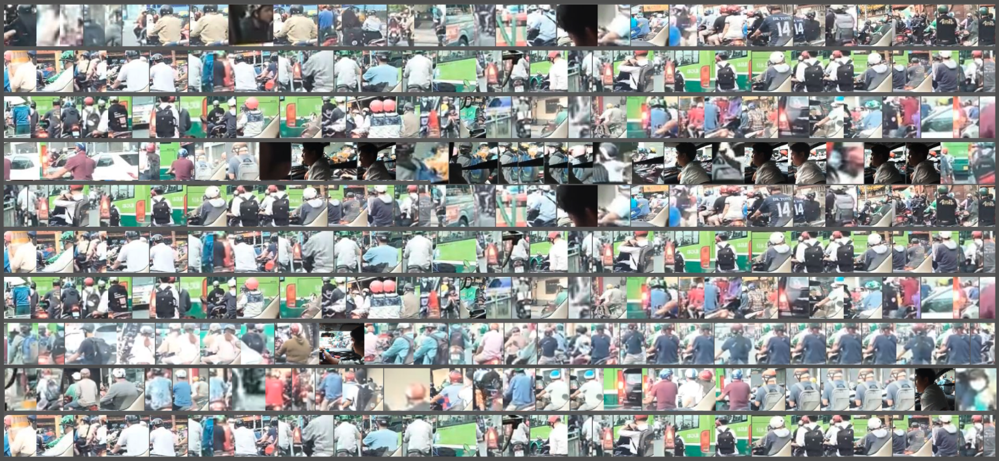

Catch us if you can 🏄🏻♂️
⤷ 2023 October 28th, 3PM-5PM ⎯ “Hen Luot 002” @ 3nam StudioHello surfers! 🏄🏽♀️
We are CodeSurfing, a backyard-science study club in Ho Chi Minh City, Vietnam. Our club brings programming closer to the Vietnamese community through teaching, sharing, and supporting interdisciplinary study in art and technology. To us, technology is initimate, beautiful, and affordable. At CodeSurfing, we learn and have fun through creating. Activities in CodeSurfing include:
- 🏄🏻♂️ gathering sessions to help participants with no prior experience in programming approach creative coding,
- 🏄🏽♀️ in-depth class to provide participants essential tools to realize their idea in code,
- 🏄🏻 free-to-access resources about creative coding written in our language, Vietnamese.
Through this, we hope to create a creative community where everyone has the opportunity to contribute their unique assets in the common language of programming.
CodeSurfing was initiated by Nhân Phan, during his Processing Fellowship 2023. As a community project, we have received precious support from Processing Foundation, from our beloved friends ( wedogood, Ivy Võ, Uyên Đồng, Yui Nguyễn, Tùng Anh, Reading Cabin, 3năm Studio), and from our community here in Ho Chi Minh City.
- Follow us on Instagram @codesurfing.vn for more updates.
- Read about our "Hen Luot 001 - 15/10/2023: Backyard Speed-Date 💌"
- Read about our "Hen Luot 002 - 28/10/2023: Farewell Technology 🥀"
Our 1st Course ⎯ Sensory Narratives 🀥
Sensory Narratives is the first course developed by CodeSurfing. The course introduces creative coding to first-time programmer while viewing programming as a intimate platform to connect us back to our nature.
Since the early day of life, human is at one with nature. Our body senses, reacts, and reflects upon the nature that we are living in, constantly. In the recent digital landscape, those intimate rapports seems to fade under the shadow of new virtual technologies.
Can we mediate the broken string between human, nature, and technology? This course re-connects us with the vivid world around using programming. Toward the end of this course, we learn to use p5.js to build a cohesive system that observes, documents, and visualizes the changes that are happening in our nature. We also learn to integrate programming into our existing creative practice using libraries, APIs, and devices to further manifest our artworks in new formats.
[seoulthesoloist]
The course is built upon 4 units (12 sessions) in ascending levels:
| ＊ UNIT 1: CONNECT | ⎯ to establish our first interaction with computer while gaining familiarity with the language of p5.js. |
| ＊ UNIT 2: TRANSMIT VISION | ⎯ to understand the world through images while practicing using arrays and functions. |
| ＊ UNIT 3: TRANSMIT SOUND | ⎯ to create with sound while practicing object-oriented programming and advanced animation. |
| ＊ UNIT 4: TRANSMIT DATA | ⎯ to sense the world that beyond seeing and hearing while learning about data-driven application. |
How To Use This Resource
The resource contains course outline, sample lectures, and curated readings. All are open access. We welcome teachers and learners to use, reference, and contribute to this community resource.
👩🏻🔬 For Teachers
Each sample lecture is designed for an approximately 90-minute session. The sample lectures are suggestive. Please use them as references and not hesitate to inteprete them into your own style!
🏄🏻♂️ For Students
Use this to have a better view of the course: what to expect and what to prepare. If you are learning by yourself, do not afraid to go off the topics and surf into new areas that pique your interest. But always, keep this outline as a North Star for your surfing journey. Also, you are not alone. Connect to CodeSurfing through our events/social media to reach out and share your work with others.
What We Provide
⤷ COURSE OUTLINE ⎯ A curriculum to teach creative coding using p5.js.
⤷ SAMPLE LECTURE ⎯ Each session comes with a sample lecture as a script to run the class. Activities in a sample lecture include:
| 📌 OBJECTIVES | Checklist of what need to be done and groups of skills to be acquired within the session. |
| 🌞 WARM-UP | Actitivy to get students engage with today's topic. Oftentimes, followed by a discussion. |
| 🗣️ TEACH | Sharing and demonstration from teachers, includes recommend teaching flow and ready-to-use code demo. |
| 🏄🏻♂️ ACTIVITY | Quick practice, discussion, and other activities to help students get a quick grasp of what they have learnt. Oftentimes, followed by a refection to summary and contemplate. This is important, we highly recommend teachers and students not to skip it. |
| 🤹🏻♀️ ASSIGNMENTS | Take-home practices. |
| 📚 FURTHER READINGS | Curated list of resources to further enrich today's lesson. |
⤷ UNIT PROJECT ⎯
- Each unit comes with a Unit Project, where students learn to apply their study into application. Detail guidance for each unit project can be found at the last session of each unit.
- We also provided a sample project to help student envision the scope. Similar to these sample projects, we expect student to write a description about their work (idea, method, and technicality). Even a small work must have a description. This is a step stone toward to better practice in documentation and to create with mindfulness.
We currently provide sample lectures for Unit 1. Others units are to be updated!
Ahoy! In this very first unit, we will get to know p5.js, its built-in functions, and how to use them to create meaningful interaction between user and computer. We also learnt to use the p5 web editor and practice consulting the p5 online documentation.
PROJECT 1. First Letter
By the end of this unit, we make an interactive letter and send it to our loved ones. In this very intimate format of a letter, we use technology as a bridge to deliver our thoughts and emotion. The letter can be made using material that we learnt in class (shape, color, typography) and elaborated with animation and interaction via mouse and keyboard. More information about the unit project can be found in Session 3.

Sample project: "portrait" ⎯ A letter to my younger self. Fabricated summer 2017 in the dialogue of Skinny Dipping (Ocean Vuong). College ended but that summer still burns slowly. As I attempt to touch the portrait, my mind forages through words of a preoccupied teenager.
⤷ SESSION 1. First Interaction
arrow_outward- What is p5.js? Demystifying: code, language, libraries.
- Make your first p5.js sketch.
- Function: p5.js built-in function
- The coordinate system, shape, and colors
- Variables
- Simple animation and mouse interaction
⤷ SESSION 2. Control
- map() & lerpColor()
- if condition to control interaction and animation using
- Interaction with mouse using mousePressed()
- Interaction with keyboard using keyPressed()
- Random
- Tidy Code and Documentation
- Write your own function
- Transformation: translate(), scale(), rotate()
- push() and pop()
- Typography: adding and styling text
- Iterative: for Loop and while Loop
Upon the connection with computer we have established in Unit 1, we continue to build a more sensory interaction: seeing. Can computer see things as the way human do? In this unit, we learn to apply coding into capture and analysing images. We also learn to program a project on a more professional level, away from pure online editor.
PROJECT 2. Trace Of A City
For this unit project, students will use camera and other recording devices to capture the essences of where they are living. We incorporate programming to highlight those essences either through manipulating the images' structure or semantics.
Sample Project: “All the strangers I met on Bờ Kênh Nhiêu Lộc”, is a reflection of myself living in the overwhelming Saigon, where I ride 12km every day to work. It is a still film with a huge cast trying to get through the screen yet no one is the main character. To make this, I performed object detection on a dashcam driving through Saigon. The model extracted drivers and placed them on the mural.
⤷ SESSION 4. Working with Images
- Programming in local environment: text editor, CLI, and all things needed.
- Structure of a p5 project: index.html, style.css, and sketch.js
- 🏄🏻♂️ Practice: Making buttons.
- Working with images
- Working with videos
- Control media: play, pause, loop, duration.
- 🏄🏻♂️ Practice: Making Zine
⤷ SESSION 5. From Pixel to Image
- Array and array manipulation
- Color spaces: RGB and HSL.
- Canvas as a grid
- Understanding image as arrays of pixels: updatePixels() and loadPixels().
- Working with webcam.
- 🏄🏻♂️ Practice: ASCII Webcam.
⤷ SESSION 6. More Than Just Pixels
- Learning images through machine learning.
- Image classification
- Object detection
- Simple machine learning application using ml5.js
- Debugging & Optimization
- Using setInterval(), setTimeOut() to schedule function execution.
Using code as an instrument to amplify the vivid world around us. In this unit, we learn to visualize sound using programming. We focus on animation and the use of algorithm and vectors on enriching our animation.
PROJECT 3: Soundscape
In this project, students go out to their neighborhood and record a soundscape. Then using programming to amplify the subject of the soundscape in visual.
Human practices require the ability of analyzing signals that we can neither see nor hear. Fishermen relies on currents, winds, and inherited knowledge to navigate. Farmers relies on rain level and temperature to adjust their harvest. This unit will guide students to design a cohesive system from devices and bodies of code to sense and make sense of surrounding data that beyond our seeing and hearing.
PROJECT 4: Personal Periscope
Sample Project: Prototype of a wave visualization where all the students of CodeSurfing are riding the waves according to real-time update of wind data in Ho Chi Minh City, Vietnam.
⤷ SESSION 10. The Data Pipeline
- Getting to know data and what data can do.
- Data type: .csv
- Load table and extract data with getRow, getColumn, getNum, getString.
- Quick visualization.
- Connect p5 with Google Sheet
- 🏄🏻♂️ Practice: Collect and visualize your own data.
⤷ SESSION 11. The Story of Data
- Descriptive statistics, measurements of data.
- Deep dive into data visualization.
- Chart selection and storytelling in data visualization
- Data source and ethics in using data.
- 🏄🏻♂️ Practice: 50 Ways to Visualize A Data.
⤷ SESSION 12. Realtime
- Datatype: JSON
- Connect p5 with Data API
- Real-time visualization
- Deploy
- Beyond data: Machine learning
- Predicting with Linear Regression